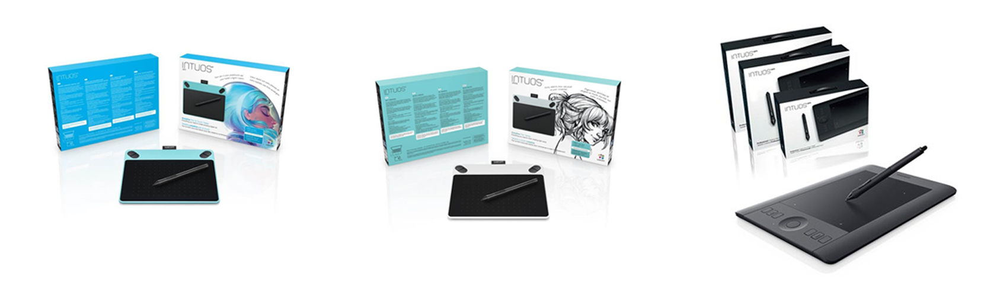
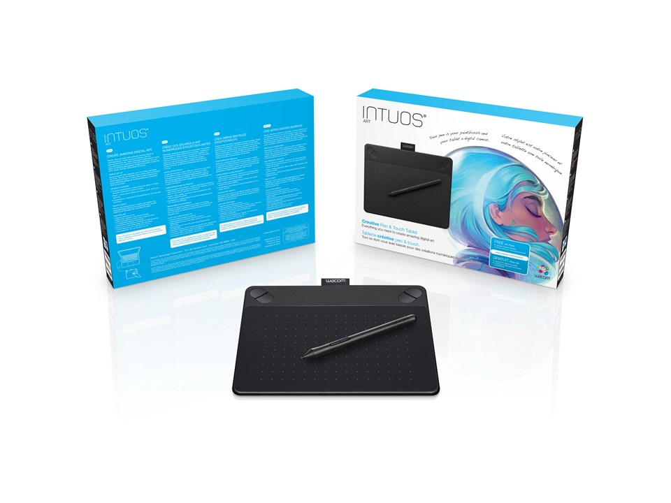
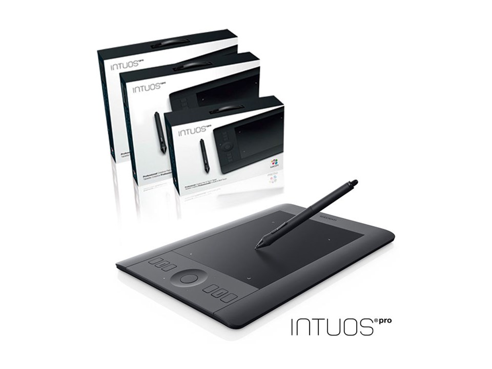
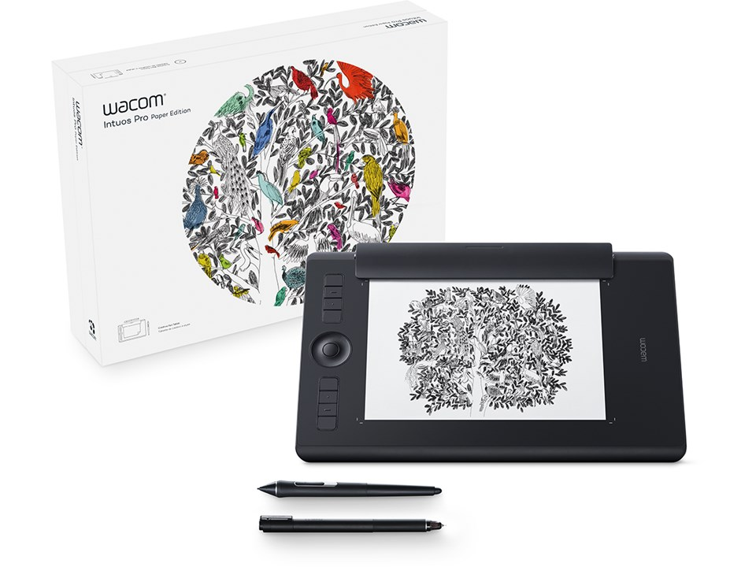

Tegneplader
Det elektroniske papir og blyant
Hvad er en elektronisk tegneplade?
Flere og flere bruger i dag elektroniske tegneplader, da der er efterspørgsel på grafiskdesign.
En elektronisk tegneplade gør kort fortalt, at du kan skrive og tegne direkte på din computerskærm med præcision.
Man kan sammenligne det med at skrive med blyant og papir, da det føles på samme måde.
Tegnepladen kan erstatte din nuværende mus og du vil kunne præcisere langt bedre i diverse grafiske programmer.
Når du skal købe en elektronisk tegneplade, medfølger der trackpad og en digital pen.
De bliver tilkoblet via USB, man kan også købes trådløse.
Tegneplader kan købes i flere størrelser, small, medium og large.
De fleste tegneplader vejer under et halvt kilo, og er rimelige mobile.
Det gør at tegnepladen er ideel til at medbringe i computertasken til og fra skolen.
Dette kan du bruge en tegneplade til:
- Efterbehandling og redigering af billeder
- Tegne og skrive elektronisk
- Grafik/illustration I Adobe programmerne
- Redigere grafiske elementer til websites
- Producere kreativt kunstværk eller maleri
Her er mine 3 bedste bud på en tegneplade:
Wacom Intuos Art Small
- Antal knapper: 4
- Opløsning: 2540lpi
- Trykniveauer: 1024
- Tilslutning: USB
- Aktivt område: 15,2 x 9,5 cm
- Mål: (BxDxH) 21 x 16,9 x 1,1 cm
- Vægt: 290 gram
- Pris: 829 kr
God til digitalt kunstværk og maleri
Denne tegneplade er god til dig, som vil male, designe og skabe nye kunstværker.
Tegnepladen er bygget enkelt så det føles som at arbejde med rigtige blyanter, pensler og markører.
Samtidig er den også budgetvenlig og kan bruges af nybegyndere og øvede.
Wacom Intuos Pro Small
- Antal knapper: 8
- Opløsning: 5080lpi
- Trykniveauer: 2048
- Tilslutning: USB og Bluetooth
- Aktivt område: 15,7 x 9,8 cm
- Mål: (BxDxH) 32 x 20,8 x 1,2 cm
- Vægt: 660 gram
- Pris: 1.606 kr
Til den seriøse grafiker
Denne tegneplade er fyldt med muligheder til dig, som er krativ og innovativ.
Med en fantastisk trykfølsomhed, betyder det ikke noget, om du bruger dine fingre eller touch pennen.
En rigtig fantastisk tegneplade til en fair pris.
Wacom Intuos Pro Medium
- Antal knapper: 8
- Opløsning: 5080lpi
- Trykniveauer: 8192
- Tilslutning: USB og Bluetooth
- Aktivt område: 22,4 x 14,8 cm
- Mål: (BxDxH) 33,8 x 21,9 x 0,8 cm
- Vægt: 700 gram
- Pris: 2.781 kr
Bedste tegnepladen til prisen!
Med denne super tegneplade, er du godt gearet til større grafiske opgaver.
Den er unik med dens præcision og har en fantastisk opløsning.
Den reagerer præcis som du vil have det og det føles virkelig, som om at man sidder og tegner med pen og papir.